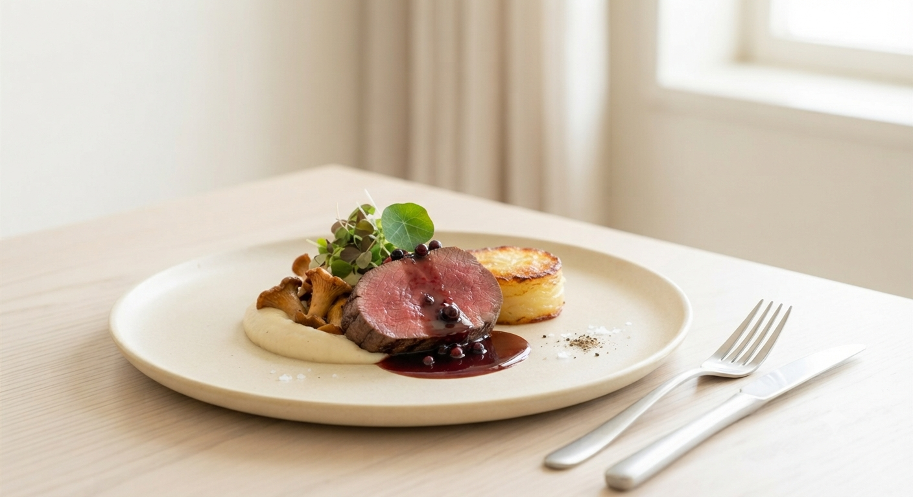
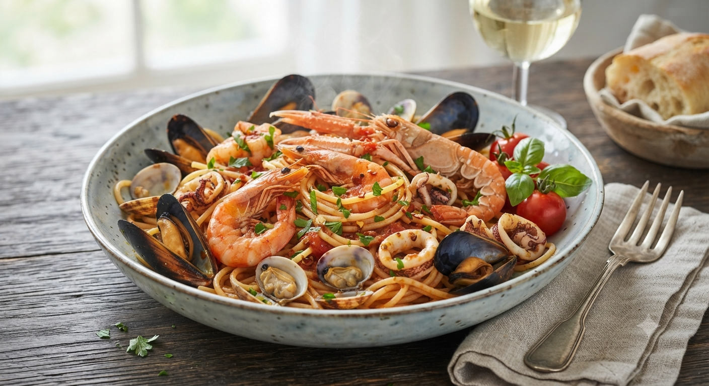
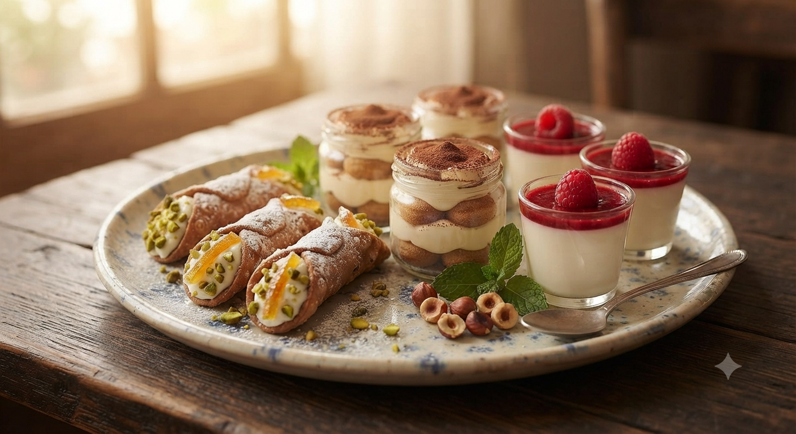

本格的な味を気軽に
「本格イタリアンは敷居が高い…」そんな心配はいりません。普段着で気楽に楽しめる、素材重視のスタイルです。

ヨーロッパで研鑽を積んだシェフが辿り着いたのは、
故郷・宮古の潮風が運ぶ、純粋な旬の味覚でした。
「渡り蟹の濃厚なコク」「生トマトと桜えびの芳醇な香り」
宮古港でその日に揚がった魚介は、どれも個性に溢れています。
私たちは、その素材が持つ「本来の力」を邪魔しないよう、火入れ一つ、塩の加減一つに心血を注ぎます。熟練の技が導き出す、素材との対話をお楽しみください。
こだわり抜いたパスタランチを見る
Freshness First
宮古港 直送素材使用
REASON
お食事の時間を大切にするあなたへ。
「本格イタリアンは敷居が高い…」そんな心配はいりません。普段着で気楽に楽しめる、素材重視のスタイルです。
メインの魚介を引き立てるのは、土地の味がする旬の野菜たち。スープからドルチェまで、丁寧な手仕事が光ります。
ステンドグラスが優しく灯る店内。小規模店だからこそ叶う、ゆったりとした会話と時間の流れを提供します。

「果物の美味しさを引き立てる」と常連様に愛される当店のデザート。パスタランチに＋300円で、心もお腹も満たされるフルセットへアップグレードいただけます。
カツヤマの味と最新情報を、皆様の日常へお届けするために。
宮古港に揚がった極上の魚介や、シェフ厳選の季節野菜。その日届いた新鮮な食材と「本日のパスタメニュー」を公式SNSで毎日いち早くお知らせします。
ご自宅での特別な記念日やホームパーティーに。リストランテカツヤマの本格的な味わいをそのまま詰め込んだ、シェフ特製オードブル＆持ち帰りメニューをご用意します。

CHEF'S PHILOSOPHY
ヨーロッパでの修業時代、一番心に響いたのは、高価な食材よりも「その土地の、その瞬間の恵み」を慈しむ文化でした。宮古に戻り、この海の豊かさを改めて知ったとき、自分の進むべき道が決まりました。
私の役割は、素材の声を聴き、お客様へ届ける通訳のようなもの。隠れ家のようなこの場所で、気負わず、本物の味を楽しんでいただければ幸いです。
席数に限りがございます。お電話にてお早めにご相談ください。